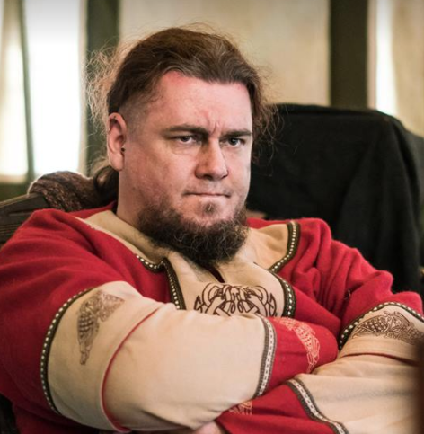
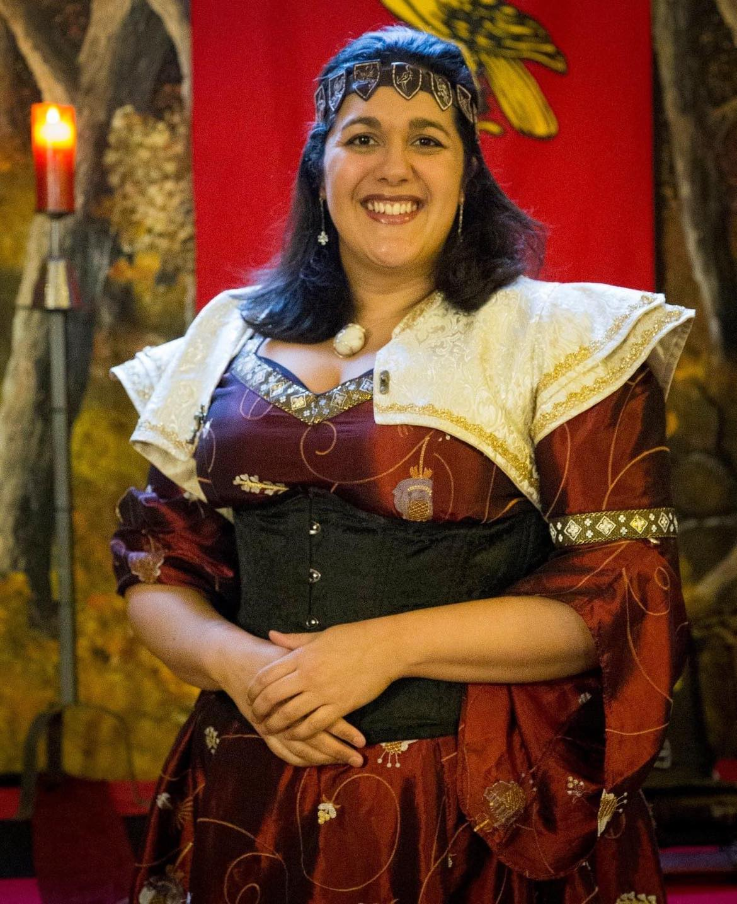

The Lions Command Structure are here to help all our players both in and out of character to enjoy the world of Curious Pastimes (CP). Out Of Character (OOC), here are some of the things Lions Command are responsible for:
- Getting the faction kit (tents, gate, banner walls, tankards, etc) to and from the events.
- Setting up and taking down the Lions camp.
- Liaising with the CP Game Team (refs, monsters, world plot) and CP Event Team (OOC logistics, safety and campsite liaisons).
- Refereeing the game and answering player questions in the Lions camp (ably assisted by our excellent Lions Faction Refs).
- Administering faction funds.
- Arranging banquet and faction events.
- Herding cats.
- Ensuring the Lions camp and player experience is as excellent as possible!
In Character (IC), Lions Command are the leaders of the land of Albion and the commanders of that nation's armies and can help with any important issues. The current Lions Command set up is as follows:
-

OOC: Dave 'FNG' McKenna
IC: High King Rudraigh Penhaligon, Hier Thegn of Caer Culhaven.
Has there been a time at CP before Dave was there? Well not really as he had been a player for almost 3 whole main events before joining the ref crew, from there to command team in the Algaia, then retiring to play in the Lions. Unable to stay away from helping run the game he has come back to the fold. Shy, quiet and understated - these are words that Dave has heard said about others but rarely about himself and his mandate is to bring law, chaos and most importantly GAMES to Albion.
Rudraigh came second in the most curmudgeonly person in Cornwall competition. Rumour has it he threw the competition, so he could passively aggressively complain about not winning. He was given his Excalibur by Genevieve on the Isle of Anwyn in the spring of 1018.
-

OOC: Lucy 'Judge Dredd' DeGraft-Johnson
IC: Ser Teagan Patrixbourne, Champion of the Gods of Law
Lucy has been playing at CP almost since its inception as a game system in 1998 in various guises and has been an absolute staple of the Lions for as long as can be remembered. She has been a dedicated member of the referee team for the faction for three years and has been writing and running lots of the excellent plot that the faction has been enjoying during her tenure. Beware though, or she'll send druids after you...
A veteran of the war in Deira, and of the events surrounding the burning of the bridge at Preston that shaped the Lance, Teagan now serves the Gods of Law above all else. Many who knew Teagan before she took on the mantle of the Gods, would tell you how different she is from the spirited and fun-loving person who joined the warhost so many years ago. She is now known more for her judgemental stare and loyalty to the Gods, than for her laugh and inappropriate humour. If you know where to look, however, the same spirit still burns and despite her less approachable demeanour, many find comfort, reassurance and wisdom when they seek out her counsel.
-

OOC: Tom 'That Algaia Guy' Hallsmith
IC: TBC
Tom has been involved with CP in one form or another for around sixteen years; In that time he's been a player, a member of game team and a member of faction command in the Algaia. Now he seeks to emulate the Arthurian knights of myth and legend by being big, dumb and not understanding how lies work.
TBC
Faction Referees
The Command Team couldn’t run the faction without help and support and for that we have an excellent crew of “faction refs” who assist by:
- Running faction monster slots.
- Contributing to plot ideas.
- Refereeing the game and answering player questions in the Lions camp.
- Generally pitching in whenever Faction Command need help.
Our current Faction Referees are:
- Chloe Bradford
- Jonathan Gregory
- Mark Holmes
- Rob Jones
- Sam Merry
- Karmen Trice